5 装备&科技
武器
你总是希望手边有把武器——毕竟你不会知道危险藏在哪里。然而，别以为你可以对武器挑三拣四。当黑暗中有东西对你发出嘶嘶声时，你可没时间挑剔，明白吗？你得用任何你的手能抓住的东西争取时间。下文的表格和图像展示了常见的各种武器。
武器特性
不同的武器可以用来对抗不同的威胁。以下列表是武器表中特性的预示说明。
- 修正：当使用该武器时对近战或远程战斗的修正。
- 伤害：一次成功的攻击造成的伤害量。除了第一个之外的
 可以增加伤害。数字旁边的字母E意味着攻击属于爆炸（第76页）。“眩晕”意味着该武器会造成眩晕伤害（第71页）而不是常规伤害。
可以增加伤害。数字旁边的字母E意味着攻击属于爆炸（第76页）。“眩晕”意味着该武器会造成眩晕伤害（第71页）而不是常规伤害。 - 射程：最小/最大射程。任何小于最小射程的攻击，会每小于最小射程1个射程等级获得-2颗骰子。武器的使用不能超过它的最大射程。
- 弹药：武器的弹药余量（第29页）。当弹药余量用尽时，你需要重新装弹。“单发”意味着武器每次攻击后都需要重新装弹（快速动作）。
- 电量：武器的电力余量（第29页），如果有的话。当电量用尽时，武器需要充电或更换电池。
- 重量：武器在物品清单占的行数。如果重量为N/A，意味着武器超重无法携带。
- 价格：价格通常用W-Y币计算。实际价格会根据当地的供求市场浮动。
- 特殊：武器有一些特殊效果。
- 护甲穿透意味着对抗该武器时所有的防护等级下降1级，直到0。
- 全自动意味着该武器可以全自动射击（第67页）。
- 不可靠意味着在投掷压力反应时出现一团乱麻（7+）并导致卡壳（除非有其他效果）。清理卡壳是一个完整动作并且需要重型机械检定。
手枪
M4A3制式手枪（M4A3 Service Pistol）
- 修正 +2
- 伤害 2
- 射程 A/M
- 弹药 2
- 重量 1/2
- 价格 $200
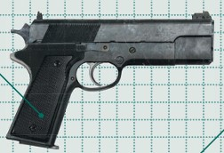
这种便宜的9mm手枪的USCMC的标配。你总是需要一个后手的后手，这款手枪就是不错的选择。
VP-70MA6制式手枪（VP-70MA6 Service Pistol）
- 修正 +2
- 伤害 2
- 射程 A/M
- 弹药 2
- 重量 1/4
- 价格 $250
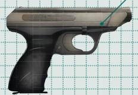
70年来，VP70系列只有来自有关键影响力的军事世家的USCMC军官才会使用。在过去10年间，它已经逐渐取代过时的M4A3成为海军陆战队的标准配枪。
.357马格南左轮手枪（.357 Magnum Revolver）
- 修正 +1
- 伤害 3
- 射程 S/M
- 弹药 1
- 重量 1
- 价格 $300
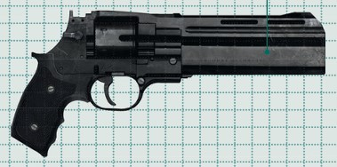
经典的大口径左轮，在边境执法官和社会渣滓中同样流行。
海神DV-303栓动枪（Watatsumi DV-303 Bolt Gun）
- 修正 -1
- 伤害 3
- 射程 A/S
- 弹药 单发
- 重量 1
- 价格 $400
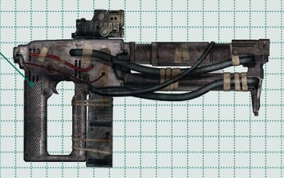
DV-303属于建筑工具，使用膨胀螺栓来进行紧急外壳维修。DV-303可以用作临时武器——像单发武器一样发射螺栓——边境叛军最早在2100s早期开始使用。
韦兰德ES-4静电手枪（Weyland ES-4 Electrostatic Pistol）
- 修正 1
- 伤害 1（眩晕）
- 射程 S/M
- 弹药 1
- 重量 1/2
- 价格 $1000
- 特殊 护甲穿透
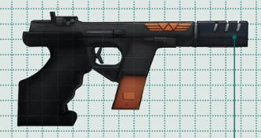
一个世纪之前开发的这种静电动能弹丸武器使用充能组件来发射高速穿甲弹。ES-4在开火时有蓝色的枪口闪光。尽管质量不错，但这种手枪在韦兰德和汤谷合并之前就因为价格和保养麻烦而逐渐被废弃了。
虽然它大部分时间都是出现在ICSC的高级公司安保团队中，但是有一些殖民地执法官员正在测试更新的型号，作为边境的标准配置——记得戴上一双绝缘手套。
雷克希姆RXF-M55 EVA手枪（Rexim RXF-M55 EVA Pistol）
- 修正 +1
- 伤害 1
- 射程 S/M
- 弹药 4
- 重量 1/2
- 价格 $400
- 特殊 护甲穿透
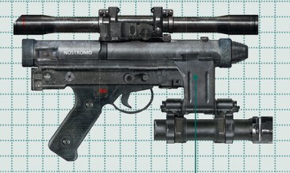
在2100-2120s间使用的W-Y激光焊枪的微型化和武器化版本。这个工具最初是2106年J'Har叛军在托林主星上起义时的临时改装武器。W-Y总是善于从任何事情中寻找利润，他们在战争后研究了这些改装，并将其作为商业舰队的标准自卫武器装备。
步枪
ARMAT M4A1脉冲步枪（ARMAT M41A Pulse Rifle）
- 修正 +2
- 伤害 2
- 射程 S/L
- 弹药 3
- 重量 1
- 价格 $1200
- 特殊 护甲穿透，全自动，榴弹发射器
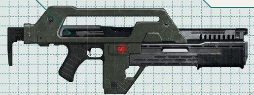
USCMC的标准配发武器，M41A脉冲步枪是10mm自动突击步枪下挂30mm栓动榴弹发射器，用有伸缩枪托和可选瞄准镜的坚固的外壳组合在一起。
M41A发射爆炸头无壳标准轻型穿甲US M309子弹，通过电子脉冲加速。剩余弹药通过LED计数器追踪，该武器有两种发射模式——单发和全自动。榴弹发射器的部分见第88页U1。
F44AA脉冲步枪（F44AA Pulse Rifle）
- 修正 +3
- 伤害 2
- 射程 S/L
- 弹药 3
- 重量 1
- 价格 $1500
- 特殊 护甲穿透，全自动，不可靠
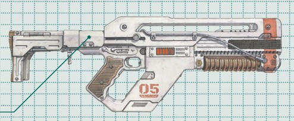
现代M41A的前身，虽然几乎过时但是依然有走私者和殖民者在使用。它配有“瞄准辅助”，通过外部电缆将瞄准镜的数据发送到活动步枪枪托，从而进行微小的调整以提高精度。它包含1个LED弹药计数器和折叠枪托。它曾经是海军陆战队的制式步枪，但是容易出故障，瞄准系统后来为新出的M56智能炮重新开发了。
AK-4047脉冲突击步枪（AK-4047 Pulse Assault Rifle）
- 修正 +1
- 伤害 2
- 射程 S/L
- 弹药 2
- 重量 1
- 价格 $600
- 特殊 护甲穿透，全自动
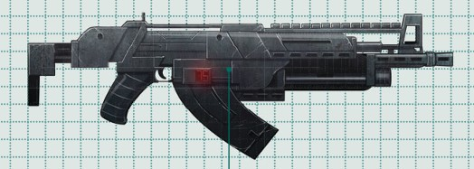
UPP用来对标M41A脉冲步枪的，AK-4047是物美价廉的替代品。因此，该武器经常出现在雇佣兵和叛军的手中。虽然不如M41A精准，AK-4047还是比USCMC的武器耐用。
M42A狙击步枪（M42A Scope Rifle）
- 修正 +3
- 伤害 2
- 射程 M/E
- 弹药 2
- 重量 1
- 价格 $1000
- 特殊 护甲穿透
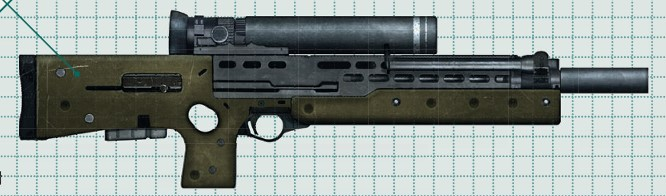
配有折叠两脚架，消焰器，全可调节枪托的M42A是USCMC专用的半自动电子脉冲狙击步枪。如果你幸运地比藏在暗处的东西更早发现对方，就直接开枪吧。
ARMAT M41AE2重型脉冲步枪（ARMAT M41AE2 Heavy Pluse Rifle）
- 修正 +2
- 伤害 2
- 射程 M/E
- 弹药 4
- 重量 2
- 价格 $1500
- 特殊 护甲穿透，全自动
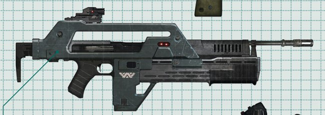
USCMC小队自动武器M41A的修改版，这种电子脉冲支援步枪用更长的枪管代替了U1榴弹发射器。这种机关枪是你在掩护撤离时想要布置的火力压制。
M56智能炮（M56 Smartgun）
- 修正 +3
- 伤害 3
- 射程 S/L
- 弹药 3
- 重量 3
- 价格 $6000
- 特殊 护甲穿透，全自动，智能瞄准器
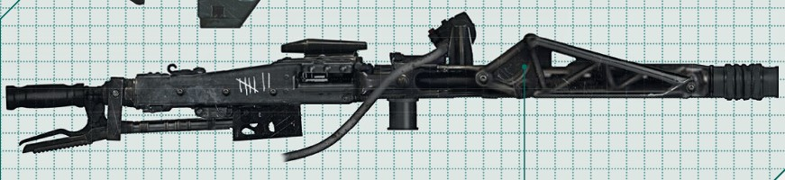
每个USCMC小队的重型武器，M56智能炮安装在武器操作员穿的装甲背带的云台机械臂上。
M56A2成为智能炮的原因在于它能够为你选择目标。它配备了红外跟踪系统和数据发射/接收器，能够锁定潜在威胁并将该信息传送到头戴瞄准器。
M56A2可以以点射或全自动射击。子弹擦过可能会切断肢体，连续射击甚至可以把人一分为二，所以要小心友军火力，新兵。
智能瞄准器：在精确瞄准（第64页）后全自动射击M56A2，攻击的第二次和第三次扫射也将获得瞄准的加成。
其他武器
ARMAT 37A2 12口径栓动步枪（ARMAT Model 37A2 12 Gauge Pump Action）
- 修正 +2
- 伤害 3
- 射程 A/S
- 弹药 1
- 重量 1
- 价格 $500
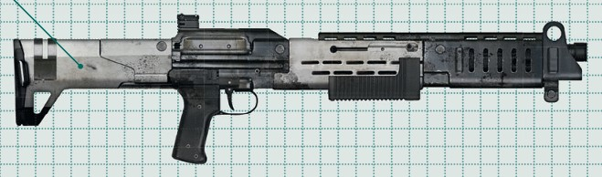
M37A2是一款经典的栓动战斗霰弹枪，是USCMC的可选装备。可靠而直接，37是你在近距离遭遇中想随手携带的枪械。
M240火焰喷射器（M240 Incinerator Unit）
- 修正 +1
- 伤害 2（火焰）
- 射程 S/S
- 弹药 2
- 重量 1
- 价格 $500
- 特殊 火焰效果
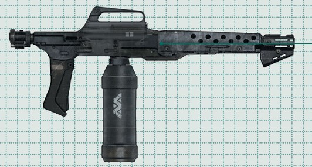
这种卡宾枪式火焰喷射器使用石脑油燃料罐对目标发射浓厚而稳定的火焰流。USCMC经常使用此武器，部署给小队和火力小组。该武器也有民用型号。前线部队给M240起了个不正式的绰号“烤薄片（Bake-a-Flake）”。在紧急情况下，这是一件很好的备用武器，尤其是在与敌对生物对抗时。大多数动物都会避开火焰，对吧？
火焰效果：如果受到伤害，目标会持续被烈度9（第76页）的火焰燃烧。火焰喷射器可以用来在区域内生成烈度9的火焰，而不是攻击特定目标。
太空ASSO-400鱼叉枪（Spacesub Asso-400 Harpoon Gun）
- 修正 -
- 伤害 1
- 射程 S/M
- 弹药 单发
- 重量 1
- 价格 $300
- 特殊 鱼叉效果
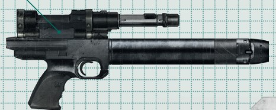
设计用于紧急手动对接操作，ASSO-400发射连着绳索的一端有抓钩的鱼叉。ASSO-400用于拉近太空中人员和自由漂浮的物品之间的距离。
鱼叉效果：命中时，抓钩会附着到目标上。在零重力环境下，如果目标比你重，你可以使用绳索快速达到目标所在的位置（完整动作，将你移动到相邻距离）。如果你比目标重，你可以将目标拉向你（如果目标抵抗，则需要进行力量检定）。
ARMAT XM99A相控等离子脉冲步枪（ARMAT XM99A Phased Plasma Pulse Rifle）
- 修正 -
- 伤害 4
- 射程 M/E
- 弹药 1
- 重量 2
- 价格 $20000
- 特殊 护甲穿透，需要瞄准
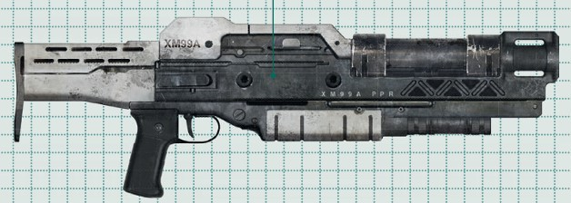
另一个USCMC正在测试的原型，这种及其强大的XM99A可以一枪杀死大部分生物。该武器在开火时有一个等离子充能延迟——因此在瞄准目标时要小心，并确保稳定。如果你在扣下扳机之后去枪口看为什么还没发射，你可能会成为“友军火力”的新定义。
需要瞄准：该武器必须在开火之前仔细瞄准（快速动作），比正常情况投掷+2颗骰子。
M5A3 RPG发射器（M5A3 RPG Launcher）
- 修正 -1
- 伤害 7
- 射程 M/E
- 弹药 单发
- 重量 2
- 价格 $1800
- 特殊 护甲穿透，需要瞄准
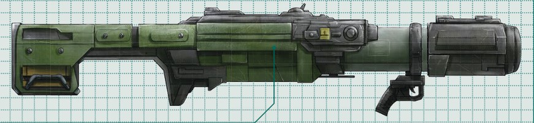
这种肩扛式火箭发射器配有伸缩瞄准镜。
需要瞄准：该武器必须在开火之前仔细瞄准（快速动作）。
UA 571-C哨戒炮（UA 571-C Sentry Gun）
- 修正 -
- 伤害 4
- 射程 S/L
- 弹药 5
- 重量 -
- 价格 $12000
- 特殊 护甲穿透，全自动，自动化
这些安装在三脚架上的机器人哨兵组成了一个自动化的周边防御系统，可以追踪并自动开火攻击任何进入射程的目标。UA 571系列配备了自动热成像和运动触发的人工智能瞄准功能。
UA 571-C配备了一门M30自动炮。在走到它前面之前，请注意你的敌我识别设置。那些配备了ARS（高级识别软件（Advanced Recognition Software））系统的可以被编程为以不同的成功率识别友军目标。如果只设置为检测运动和热源，那么任何移动的热源都可能会被打死。
自动化：激活后，哨戒炮将按照其设置对最近的目标进行射击，其远程战斗技能等级为8（没有敏捷）。攻击检定不能追骰。哨戒炮也可以通过使用头戴瞄准器进行远程操作。
ARMAT U1榴弹发射器（ARMAT U1 Grenade Launcher）
- 修正 +1
- 伤害 2E
- 射程 M/L
- 弹药 1
- 重量 1/2
- 价格 $600
- 特殊 取决于手榴弹的类型
这种30毫米的栓动枪通常作为M41A脉冲步枪的一部分，但也可以单独使用。当面对占据数量优势的敌人时，U1是你的朋友——没有它就不要进入外星蜂巢。嗯，即使有它也不要进入蜂巢。记住远离蜂巢。好吗？
U1的标准弹药是M40高爆破片手榴弹，但发射器可以搭载各种其他类型的手榴弹，从烟雾弹到电子G2电击手榴弹。
烟雾弹：不会造成伤害，但会阻挡目标区域内、进入和离开目标区域的视线。
G2电击手榴弹：造成眩晕伤害而不是普通伤害。
M40双用途榴弹（M40 Hedp Grenade）
- 修正 -
- 伤害 2E
- 射程 S/M
- 弹药 一次性
- 重量 1/4
- 价格 $60
虽然是设计用于U1榴弹发射器，但高爆双用途M40也能用作投掷手榴弹。要将这些U1手榴弹作为投掷爆炸物使用，必须去掉红色塑料保险并按下其下方的扳机。三秒后，手榴弹会爆炸。UPP有一种诺康姆（Norcomm）制造的对标产品。
G2电击手榴弹（G2 Electroshock Grenade）
- 修正 -
- 伤害 2E（眩晕）
- 射程 S/M
- 弹药 一次性
- 重量 1/4
- 价格 $400
这种手榴弹被称为“电子绝育器（electronic ballbreakers）”，是有充分理由的。投掷时，它们会自行弹起约一米高，然后释放出高电压电冲。通常非致命的电击仍然足够强大，可以冻结一个人的中枢神经系统。
该武器适合控制人群。当处于围绕一颗气态巨行星的衰减轨道的空间站上的最后一班穿梭机中，且只剩下一个座位时，把几件这样的武器扔进人群里，关闭气闸，然后就系好安全带准备回家吧。
手榴弹：上面的内容是使用G2作为手榴弹时的情况
战术刀（Combat Knife）
- 修正 +1
- 伤害 2
- 范围 A/A
- 重量 1/2
- 价格 $50
消防斧（Fire Axe）
- 修正 -
- 伤害 2
- 范围 A/A
- 重量 1
- 价格 $60
- 特殊 护甲穿透
地质勘测炸药（Seismic Survey Charge）
- 修正 -
- 伤害 3E
- 范围 S/M
- 弹药 一次性
- 重量 1
- 价格 $200
这些强力炸药装置用于对新殖民的星球进行地质勘测，但在紧急情况下也可以作为武器使用。
电棍（Stun Baton）
- 修正 +1
- 伤害 1（眩晕）
- 范围 A/A
- 电量 2
- 重量 1
- 价格 $80
基本上是牛用电击器，这些电击装置设计用来维持边境地区的害虫和牲畜秩序。虽然电流不足以杀死人类，但触碰即可使目标失去行动能力。如果看到脚下有东西，就用它打它们。除非它们的皮肤比我们薄，否则应该不会伤害一些小家伙...
切割炬（Cutting Torch）
- 修正 -1
- 伤害 3
- 范围 A/A
- 电量 3
- 重量 1
- 价格 $300
- 特殊 护甲穿透
一种多用途的喷枪，可用于焊接和切割金属。在紧急情况下，切割炬也可以作为武器使用。雷克希姆EVA手枪最初是作为激光切割炬开发的。你想活下去吗？你需要随机应变。
其他装备
套装&护甲
为了保护你自己，隔绝伤害和太空的寒冷真空，你会需要穿上正确的套装或护甲。护甲拓展见第67页，空气余量见第28页。
M3单兵防弹衣（M3 Personnel Armor）
- 防护等级 2
- 空气余量 -
- 重量 1
- 价格 $1200
- 特殊 通信单元，PDT
USCMC的标准配备，M3包括一个硬壳护甲垫片背心、覆盖腹部的柔性防弹垫片，以及下肢的贝壳形护腿。该防弹衣可以防护锐器和爆炸物，但无法抵挡高威力弹药的直接命中。它内置通信单元和个人数据传输器（PDT,Personal Data Transmitter），配有可连接各种设备的编织作战背带，并有监测佩戴者生命体征并将数据传输到战术监控站的触点。
凯夫拉防暴背心（Kevlar Riot Vest）
- 防护等级 1
- 空气余量 -
- 重量 1/2
- 价格 $600
凯夫拉防暴背心是一种由编织合成纤维制成的相对轻量的背心，是整个殖民地执法和安保部门的个人防护装备的首选。
IRC MK.50压力服（IRC MK.50 Compression Suit）
- 防护等级 -
- 空气余量 5
- 重量 1
- 价格 $4000
- 特殊 真空防护，通信单元，头灯，机动检定-1
六十年前推出时，它是最先进的装备，如今可靠的Mk.50压力服在边境地区仍然很常见。坚固的头盔配有通信单元和抬头显示器、侧边头灯，以及可与任何移动或固定监控系统同步的无线头盔摄像机。压力服携带充足的氧气，并在真空环境中为穿戴者维持内部压力。如果你注定会被吹出太空，你肯定希望穿着Mk.50。
IRC MK.35压力服（IRC MK.35 Pressure Suit）
- 防护等级 1
- 空气余量 4
- 重量 2
- 价格 $2000
- 特殊 真空防护，机动检定-2
作为USCMC的标准配备，很不幸的，Mk.35是一款笨重的战斗压力服，配有沉重的循环装置。穿戴这种服装进行战斗时需要小心，因为硬质关节在剧烈动作下容易卡住。虽然这种廉价的服装可以完全防护太空真空，但在太空行走后，你必须花时间在减压舱里适应。基本上，这套服装很糟糕，但如果只能在Mk.35和太空的寒冷之间选择，那就闭嘴穿上吧。
通用生态生存防护服（ECO All-world Survival Suit）
- 防护等级 2
- 空气余量 6
- 重量 2
- 价格 $30000
- 特殊 真空防护，通信单元，头灯，零重力下移动时的机动检定+2
这款EVA硬壳服具有全铰接旋转关节和自驱动手指，提供有限的活动范围，但可最大程度地保护免受太空危险的伤害。头盔内置了先进的抬头显示器，套装本身配有推进器，可在无系绳的零重力环境中进行操作。标准Eco EVA服的通信阵列没有屏蔽，因此对异常信号非常敏感。
韦汤全环境防护服（Weyland-Yutani APRsuit）
- 防护等级 1
- 空气余量 4
- 重量 1
- 价格 $5000
- 特殊 对酸性环境防护等级3，穿着可以防抱脸虫（第213页），生存检定+2
全环境防护服是一种专门的装甲压力服，设计用于恶劣环境条件下的战斗和动物控制。虽然全环境防护服不能保护你免受太空真空的伤害，但它还是能提供有限的空气供应和护甲，能够抵御极端温度，并且能防腐蚀性物质侵蚀。
头盔包括防护眼镜和面罩，以保护佩戴者的面部。这套防护服通常配备给W-Y的安全突击队和“抓狗小队”，用于控制敌对生物，所以如果你看到一群家伙穿着这些装备出现，赶紧离开——因为他们寻找的东西很可能就是你。
P-5000电动工业装载机（P-5000 Powered Work Loader）
- 防护等级 1
- 空气余量 -
- 重量 -
- 价格 $50000
- 特殊 使用需要重型机械技能等级2及以上。重型机械和近战+3颗骰子，近战攻击的基础伤害3。
通常被称为电动装载机（power loader），这种机械化外骨骼动力框架用于搬运货物以及进行焊接和其他维修工作。外骨骼套装可以将你的力量放大十倍，并配备了用于抬举和抓握的液压爪。
防滚架在你操作时保护你的面部，而编织安全带则在你跌倒时将你固定住。P-5000很难掌握，但专业人士操作它时可以看起来像走路一样简单。它有许多改装型号，包括武装版本和用于更大负载的轮式工业装载机。
计算机主机
虽然有很多不同类型的计算机分布在太空版图的各行各业，但是边境使用的主系统只有两种。
MU/TH/UR 6000
- 技能 计算机科学5，驾驶5，侦察5
- 价格 $2500000
MU/TH/UR 6500
- 技能 计算机科学7，驾驶5，侦察6
- 价格 $3500000
MU/TH/UR 7000
- 技能 计算机科学7，驾驶6，侦察7
- 价格 $5000000
MU/TH/UR 9000
- 技能 计算机科学10，驾驶8，侦察10，远程战斗9
- 价格 $50000000
大多数宇宙飞船、空间站和军事设施都是通过一种名为MU/TH/UR的复杂计算机系统运行的。该系统最初由韦兰德公司在21世纪末开发，MU/TH/UR系统很快就成为运行复杂自动化系统和设施的标准。
这些电脑被使用它们的船员亲切地昵称为“老妈（Mother）”，几十年来，出现了各种配备了不同级别的人工智能套件的型号。虽然MU/TH/UR 1000和9000系列都是复杂的互动型模型，随着时间的推移可以发展出初步的个性，但如今大多数军事、货运和实用型飞行器都是配备标准的5000至8000系列。
虽然这些机器可以通过船上的对讲系统进行通信，但它们中的大多数只能通过计算机核心直接访问。进入这个安全且无静电的房间的卡片和打孔代码权限仅授予船舶的指挥官。计算机核心还允许指挥官向“老妈”的自动程序发出备用指令和覆盖指令。
A.P.O.L.L.O.
- 技能 计算机科学5，驾驶4，侦察5
- 价格 $2000000
西格森（Seegson）对标MU/TH/UR的产品A.P.O.L.L.O.，旨在协调西格森的工作乔（Working Joe）仿生人来操作宇宙飞船。在其他方面，它不如MU/TH/UR型号那么先进。
数据存储器
除了口香糖纸和几张脏纸巾，人们总是需要在口袋里携带信息。在22世纪，这通常通过以下方式实现。
长数据光盘
- 重量 -
- 价格 $5000
- 效果 保存10ZB的数据。
在21世纪上半叶经历了几次因电磁脉冲造成的数据损失后，人们决定重新引入并强化物理数据存储。韦兰德公司的科学家对光盘介质进行了改进，将其提升到一个新的水平。其成果是一种纳米光学长数据存储盘。所有殖民地和公司的记录都备份在这些光盘上，以防电磁放电事件发生。
磁带
- 重量 -
- 价格 $5
- 效果 保存120TB的数据。
一种有着两百年历史的技术，磁带盒在边境地区之所以受欢迎，仅仅是因为它们既可用后即弃又便宜。利用溅射沉积技术，这些磁带盒每个可存储 60、90 或 120 TB的信息。
虽然容易被强磁脉冲干扰，但磁带的好处在于，驱动它们的这种古老技术不会产生易于被检测到的波信号。大多数安全传感网格都设置为探测更复杂的电子硬件。所有这些因素结合在一起，使磁带在过去五十年里一直保持流行。
诊断&显示器
计算机终端（Computer Terminal）
- 重量 N/A
- 价格 不同的
- 效果 访问和处理数据（计算机科学检定）。
计算机终端是任何殖民地、星际飞船或空间站的基础电子硬件，它可以通过键盘或语音命令以及显示器或全息图访问和处理数据。在终端使用正确的代码和计算机科学检定，有可能让你访问MU/TH/UR或A.P.O.L.L.O.所知道的任何信息
萨玛妮E系列手表（Samani E-Series Watch）
- 重量 -
- 价格 $50
- 效果 追踪时间、氧气和压力等级（生存+1）。
双面精密腕表，萨玛妮E系列的每一款设备都能够显示两个同步殖民地的时间和日期，使太空旅行者在深空中也能掌握家乡的时间。最新推出的款式E-550配备了氧气和压力传感器，可以在船体破损时提醒用户。
个人数据传输器（Personal Data Transmitter）
- 重量 -
- 价格 $100
- 效果 监控定位和生命体征（医疗+1）。
这些“PDT”会传输接收者的位置。一些型号还可以监测生命体征。大多数企业资助的边境世界都会为其殖民者配备PDT，以便在危险环境中跟踪他们。PDT可以通过手术植入、内置于压力服中，或者作为配件佩戴。
IFF应答机（IFF Transponder）
- 重量 -
- 价格 $250
- 效果 防止哨戒炮误伤友军。
防止自动警戒系统意外把友军打成碎片的个人信标。通常在行动前会通过手术植入，系统唯一的缺陷是信号可能被干扰或敌方为了渗透目的可能窃取收发器。如果IFF是通过手术植入的，那该如何实现呢？你会惊讶于一把锋利的刀能做什么。
数据传输卡（Data Transmitter Cards）
- 重量 -
- 价格 $50
- 效果 视听数据的传输器（计算机科学）+1。
DTC 是一种小型透明塑料数据传输卡，可插入各种记录设备，例如宇航服头盔上的内置视觉和音频记录器。它们可以将数据无线传输到已同步的终端。设备捕获的信息可以MU/TH/UR或A.P.O.L.L.O.系统分析，或在全息面板（HoloTab）上显示。
全息平板（HoloTab）
- 重量 N/A
- 价格 $100000
- 效果 战略分析平台（侦察和指挥+2）。
高端的战略和分析平台，全息面板——或全息显示桌——接收扫描的实时或录制信息，并生成该对象的三维全息图。全息面板通常与现有地图配合使用，或与PDT和参数上行频谱图映射装置协调使用。
西格森个人平板（Seegson P-DAT）
- 重量 1/2
- 价格 $500
- 效果 战场队伍的坐标信息（计算机科学+1）。
个人数据平板（personal data tablet,）可以与频谱图映射装置、PDT以及头盔摄像机同步，以便在行动中协调团队。
西格森系统诊断设备（Seegson System Diagnostic Device）
- 重量 1
- 价格 $300
- 效果 排查计算机系统故障（计算机科学+2）。
SSDD 用于排查空间站或星际飞船上的计算机和机械系统问题。一个优秀的工程师知道如何使用它们来破解门和计算机终端——但你在这里可别说我告诉你的。
模块化计算设备（Modular Computing Device）
- 重量 N/A
- 价格 $8000
- 效果 全息视听投影仪（操纵+2）。
由韦兰德公司在21世纪完善和制造的MCD是一款高端全方位音视频全息投影仪。它生成的全息图可以覆盖6x6米的区域，并且是完全沉浸式体验。
PR-PUT上行终端（PR-PUT Uplink Terminal）
- 重量 1
- 价格 $9000
- 效果 遥控飞船（计算机科学检定）。
这是一款军用级防护且防水的笔记本电脑，这款便携式终端配有内置的飞行操纵杆。使用正确的技能（M计算机科学检定）和访问代码，你可以使用PR-PUT连接到殖民地上行塔，并远程操控轨道飞船。
通信单元（Comm Unit）
- 重量 -
- 价格 $50
- 效果 允许团队远程通信
一款用于团队通信的基础无线电耳机，通信范围约为1公里。某些护甲和生态服中内置了通信单元。
西格森C系列磁带录音机（Seegson C-Series Magnetic Tape Recorder）
- 重量 1
- 价格 $80
- 效果 录音和播放音乐（操纵+1）。
一种“老技术”的便携式音频录音机，用于录制或播放音乐和音频日志。流行的型号包括经典的C-24 ka-boombox和最新发布的便携式C-60“太空漫步者（spacewalk-man）”。现在当你进行舱外活动（EVA）时，你可以随身携带你的乡村布鲁斯。
视觉设备
手电筒（Flashlight）
- 范围 近
- 重量 1/2
- 价格 $40
- 效果 移除一格区域的黑暗效果。
可以单独携带也可以装在远程武器上。
M314运动追踪器（M314 Motion Tracker）
- 范围 远
- 电量 5
- 重量 1
- 价格 $1200
- 效果 在潜行模式（第58页）侦测运动。
M314 是一种运动扫描装置，使用高功率超声波来检测其传感器范围内的运动。它最初是为搜救队设计，用于寻找平民，但这种追踪器很快被军队在太阳系外星球中对抗游击队时使用。
M316运动追踪器（M316 Motion Tracker）
- 范围 中等
- 电量 3
- 重量 -
- 价格 $3000
- 效果 在潜行模式（第58页）侦测运动。
M314 的缺点在于其体积和重量。一种实验性的脉冲步枪升级配件——M316——目前正在实战测试。它紧凑、轻便，在战斗中容易快速查看。虽然 M316 的操作方式与 M314 相差不大，但其范围要有限得多。你的体验可能会有所不同，但这就是你们这些步兵的意义——炮灰，用来帮助大公司完善他们的新玩意。
光学瞄准镜（Optical Scope）
- 范围 +1
- 重量 -
- 价格 $60
- 效果 手枪或步枪的射程提高一个等级，但只能用于瞄准射击。
有多种类型，包括激光辅助绿色瞄准镜。
神经面罩（Neuro Visor）
- 范围 远
- 电量 5
- 重量 1
- 价格 $10000
- 效果 检测或与深度睡眠者交互（计算机科学检定）。
神经面罩是一种带有抬头显示（HUD）面罩的头盔，可以让操作员监控并与处于停滞状态的受试者的潜意识和梦境进行交互。熟练的使用者还可以使用神经面罩与处于深度睡眠状态的受试者进行交流，而高级使用者则可以用它来操控别人的梦境——所以下次你进入深度睡眠时，保持梦境干净——你的主管可能正在偷窥。
西格森小地图2000SE（Seegson Microview-2000SE）
- 范围 极限
- 重量 1/2
- 价格 $250
- 效果 追踪当前位置。
小地图2000SE 是一种用于空间站的导航地图系统，它使用设备在空间站上的坐标来确定“你在这里”的位置——无论此刻“这里”在哪里。
双筒望远镜（Binoculars）
- 范围 极限
- 重量 1/2
- 价格 $100
- 效果 在远及以上距离的侦察+2。
可以和测距仪或夜视仪装在一起。
参数上行频谱图映射装置（Parameter Uplink Spectograph Mapping Device）
- 范围 极限
- 电量 5
- 重量 1
- 价格 $50000
- 效果 在潜行模式中每节扫描一格区域，自动侦测非隐藏状态中的敌人。
有时被称为“小狗（Pups）”，这些价格高昂的测绘设备已经使用了大约一百年。小狗利用有限的反重力推进在本来难以穿越的地形上漂浮、通过或飞过。
当这些球体进行侦察时，它们会不断用测绘激光扫描设备周围360度的区域。小狗随后将光谱信息发送回同步设备，通常是宇宙飞船、地面全息面板或移动指挥车辆中的监控站。它们还可以探测生命形式、大气状况、毒素等。
小狗之所以获得这个昵称，是因为它们在搜索和扫描时会发出一种令人毛骨悚然、像猎犬一样的嚎叫声。
工具
海神DV-303螺栓枪（Watatsumi DV-303 Bolt Gun）
- 重量 1
- 价格 $400
- 效果 飞船维修（重型机械+2）。
一种使用膨胀螺丝进行紧急船体维修的建筑工具。也可以用作武器（第83页）。
维修千斤顶（Maintenance Jack）
- 重量 1
- 价格 $150
- 效果 在相关情况下重型机械+1。
一种常用工具，用于打开无电动力舱门或将电力从电气接线箱引入或引出（奖励+1，基础伤害1）。
机械切割炬（Mechanical Cutting Torch）
- 电量 3
- 重量 1
- 价格 $300
- 效果 建造和维修（重型机械+2）。
一种实用的喷灯，既能切割也能焊接金属。也可以用作武器（第89页）。
电池（Power Cell）
- 重量 1/4
- 价格 $30
- 效果 使一件物品恢复满电。
用于给运动追踪器和其他电器充电。
电子工具（Electronic Tools）
- 重量 1/2
- 价格 $250
- 效果 在相关情况下（计算机科学）+1。
用于维修或重新接线的工具。
医疗用品
个人医疗包（Personal Medkit）
- 重量 1/4
- 价格 $50
- 效果 进行急救时医疗+2（一次性使用）。
个人医疗包包含你需要的用来止血、消毒伤口并烧灼伤口的物品，还有一些消毒绷带来包扎伤口，以及一剂让你保持清醒的兴奋剂。医疗包不是永久解决方案，更像是临时措施，让你在到达自动医生之前不会失血过多。
外科手术包（Surgical Kit）
- 重量 1
- 价格 $200
- 效果 急救和针对重伤的手术的医疗+2，如果用作武器，基础伤害为2。
这些看起来很吓人的仪器可能意味着生或死——无论是在外科医生还是杀手手中。虽然它们的目的是拯救生命，但在紧急情况下，它们也可以成为很好的切割武器。
自动医生（Autodoc）
- 重量 N/A
- 价格 $500000
- 效果 进行急救（不能治疗重伤，那需要手术）的医疗技能等级为8（检定不能追骰）。
并非每个人都能负担得起保林医疗舱，但几乎每艘飞船、每个空间站和殖民地至少都有一台自动医生设备。自动医生本质上是保林医疗舱的廉价版本，是一种自动化的医疗治疗装置，用于诊断和治疗较轻的伤口和感染。它无法进行复杂手术，但可以复位骨折。
保林医疗仓（Pauling Medpod）
- 重量 N/A
- 价格 $2000000
- 效果 可以进行急救和手术，医疗技能等级为12（检定不能追骰）。
如果你有生命危险，一定要确保附近有台保林。保林医疗仓是太空医学的答案，它是一台自主医疗扫描和手术装置，能够进行心脏搭桥手术。保林医疗仓可以通过集中抗生素注射来诊断和治疗感染。它可以进行基础的伤口修复和预编程的手术步骤，比如阑尾切除术、腹腔镜消融术和剖腹产。所有款型的保林医疗舱都配备了密封手术防护罩、舒适的肢体固定装置、激光手术刀、计算机控制的机器人手术臂、液体喷雾麻醉剂和生命体征传感器，所有设备都安装在可调节的钛合金基座上。
药品
各种各样合法非法药品在边境都随处可见。标注的价格是1剂，每剂计为小（tiny）物品。
不眠药（Neversleep Pills）
- 价格 $2
- 效果 压力等级+1但是消除1天的睡眠需求，在此期间不能缓解压力（第73页）。
快速起效的补充剂，让你在睡觉时间后仍能保持活力。过量使用可能导致中风或心脏病发作。
8号药剂（Hydr8tion）
- 价格 $5
- 效果 消除深度睡眠之后的疲劳（第75页）。
一种能抵消深度睡眠（第110页）脱水作用的电解质溶液，8号药剂是太空时代为数不多且无副作用的药物之一。
镇定剂（Naproleve）
- 价格 $20
- 效果 压力等级归零。每班每摄入超过1剂的，造成所有技能检定-1，直至本班结束。
一种可注射的即时止痛药，适用于所有类型的疼痛、压力和刺激。建议在进行任何自助剖腹产以取出异常胎儿时使用。可立即将患者的压力等级降至0。警告：过量使用镇定剂可能会产生令人陶醉的效果。
快乐药（Recreational Drugs）
- 价格 从$5一包香烟到$60000一千克苯甲酰芽子碱不等。
- 效果 通常是压力等级+1或-1。每班每摄入超过1剂的，造成所有技能检定-1，直至本班结束。
玩个痛快吧。大麻、烟草，以及某些剂量的类固醇、苯二氮卓类和摇头丸都是公司医生合法开处方用于娱乐的药物。
X药（X-Drugs）
- 价格 不同的。
- 效果 不同的。
这些是更极端的药物，大多数有道德的公司都努力将其拒于自己的殖民地之外。这些X类药物可以提高力量、耐力和感官，但长期使用可能导致严重的副作用，如幻觉、癫痫发作、精神病和中风。据传殖民地海军陆战队正在为其士兵试验新的强效X类兴奋剂。
食物&饮品
预制餐（Prefab Meals）
- 重量 1/4
- 价格 $10
- 效果 满足一天所需的食物。
在太空中，平均的一餐是预制的速冻口粮。飞船上的典型餐食包括意大利面、谷物、冻干蔬菜、炖菜、肉饼以及类似玉米面包的食物。企业让员工为这些预制餐付费，尽管实际上几乎没有其他选择，而且工人们是在工作时间里待在太空的。
糖果条（Candy Bar）
- 重量 1/4
- 价格 $15
- 效果 满足一天所需的食物。
边境的奢侈品，这些令人羞愧的享受可以给你带来糖分的冲击，如果你需要的话。
瓶装水（Water Bottle）
- 重量 1/4
- 价格 $2-$100
- 效果 满足一天所需的水。
船上公司提供的水（$2）是定量供应的，浑浊、循环使用，带有金属味，但可以让你挺过一天。在某些星球，瓶装纯净水（$10）是奢侈品，在荒凉的岩石星球上每瓶甚至能卖到$100。
咖啡（Coffee）
- 重量 -
- 价格 免费-$1.50
- 效果 压力等级+1，推迟缺少睡眠的疲劳一班。每班额外摄入的剂量无效。
公司大多数船只和站点都会免费为船员提供咖啡。在地球危地马拉种植的韦汤咖啡，是各地区评分最高的咖啡，而免费咖啡被认为是韦汤就业福利之一。如果你快要打瞌睡，咖啡可以提供咖啡因提神，让你熬过上午。
“虫汁”蛋白饮料（"Bug Juice" Protein Drink）
- 重量 1/4
- 价格 $5
- 效果 满足一天所需的食物和水。
通常被称为“虫汁”，这种高蛋白高热量饮料是由面包虫、蟑螂、甲虫以及其他在虫虫农场饲养的昆虫制成的。由各种制造商生产，这是在边境上生存的一种廉价且经济的方式。
殖民地特色餐（Colony Specialty Meals）
- 重量 1/4
- 价格 $20-$300
- 效果 满足一天所需的食物，压力等级-1。
行星殖民地的食物可能会更好，因为殖民者会发挥创意，用配给创造新的“美食”。有些殖民地养自己的牲畜，而有些则可以获取可食用的本地野生动物，从而产生种类繁多的美食，从转化3号星（Terraform 3）的牛肉汉堡和牛排，到煮熟的田中星（Tanakan）蝎子胸甲，再到布拉肯（Bracken）世界的海藻沙拉和寿司。
啤酒及其他（Beer and Booze）
- 重量 1/4
- 价格 $5-$500
- 效果 压力等级-1。每班每摄入超过1剂的，造成所有技能检定-1，直至本班结束。
是时候喝一杯了。酒精依然是老选择，威士忌和伏特加占据市场主导地位。在边境地区首选的啤酒是韦汤原版真正的“特浓”阿斯彭啤酒（Aspen beer）。即使被稀释了，味道像尿一样，但能达到效果——而且比索塔干啤（Souta Dry）那个垃圾要好。
载具
进入黑暗、令人毛骨悚然的空间。遭遇埋伏。设好炸药掩护撤退。抓起钥匙，跳上驾驶位，开车。快啊。糟糕，有东西躲在货箱里！现在怎么办？这就是你的处境——本章节包含了你能驾驶的东西，不是怎么杀怪物。虽然下面的清单远非详尽无遗，但它们很好地展示了人们在边境星球上出行所用的载具。只要确保锁好车尾箱就行了。
载具特性
以下列表是载具表中特性的预示说明。
- 分布：可能遇到这些载具的地区。
- 长度：载具的长度，单位米。
- 乘客：车辆可以乘坐的人数，包括驾驶员。
- 机动性：在进行挑战性操作时，对你的驾驶检定的修正。
- 速度：载具的速度，每个驾驶动作可以通过的区域的数量。
- 耐久：在报废之前载具可以承受的伤害。
- 装甲：载具的防护等级。
- 武器：安装在载具上的典型武器，如果有的话。详见第313页的列表。
- 价格：以W-Y币计算的常规价格。实际价格可能根据当地的供求关系变化。
韦兰德NR-9系列全地形车（Weyland NR-9 Series All Terrain Vehicle）
- 分布 边境殖民地
- 长度 3.2米
- 乘客 1
- 机动性 +2
- 速度 2
- 耐久 2
- 装甲 1*
- 武器 -
- 价格 $3000
*驾驶员和乘客是暴露的，可以被视为独立的目标，不受装甲保护。
韦兰德NR-9系列全地形车
虽然有些过时，但已有百年历史的NR系列韦兰德ATV在边境地区仍在使用。这些小型车辆坚固可靠，对于外环殖民地生活至关重要。NR系列可容纳两人背靠背坐在保护性防滚架下，并使用四个三连悬挂履带轮来应对最艰难的地形。
大保太系列8*8拖拉机（Daihotai Series 8x8 Tractor）
- 分布 边境殖民地
- 长度 6.6米
- 乘客 4
- 机动性 -
- 速度 2
- 耐久 6
- 装甲 3
- 武器 -
- 价格 $17000

大保太系列8*8拖拉机
大保太系列拖拉机是一种用于崎岖边境地形的多用途工作车辆，完全能够适应大多数艰苦殖民地的需求。大保太的八轮悬挂系统可以在除最严重的颠簸地形外提供相对平稳的行驶。这些模块化拖拉机可以配备推土机刀片、挖掘机、切割机、起重机、取芯器、弹簧冲击器、焊机、钻机、联合收割机等多种设备。
一些殖民者甚至在这些拖拉机上安装了武器，用它们来保护自己的劳动成果。拖车可以挂在大保太上，它还可以用作跨国货物运输工具（转化3号星的农民和牧场主用这些拖拉机运送作物，并往返于太空港）。拖拉机的驾驶舱是封闭并加压的，拥有自给自足的环境。大保太可以在有毒的大气中工作，甚至可以在无空气的月球上工作。
M570系列装甲运兵车（M570 Series Armored Personnel Carrier）
- 分布 边境和外环的USCMC战场和军事基地
- 长度 9.2米
- 乘客 13
- 机动性 +1
- 速度 3
- 耐久 8
- 装甲 5
- 武器
- 相位等离子脉冲炮塔
- 20mm加特林机枪
- 价格 $17000

M570系列装甲运兵车
USCMC的标准地面运输工具M570系列APC，能够将一个完整的小队运送到战场。其内部配备了战术指挥中心，与每名士兵的头盔摄像头和生命体征相连。外部装甲采用激光吸收涂料。
此外，M570还配备了干扰弹发射器和一个小型前置炮塔，并在轨道系统上安装了可旋转主武器组，当不使用时可以向后滑动并收纳到车辆后部，从而降低APC的轮廓和热信号。
其大型装甲轮胎的气压由驾驶员控制，以便在软地形上获得更好的牵引力，并让车辆底盘在崎岖地面上获得额外的离地间隙——其低矮的外形或许是该APC最大的弱点。在岩石环境中，如果由鲁莽的驾驶员驾驶，很可能会损坏传动桥。
这种两栖且真空密封的APC设计用于可被夏延投放船（Cheyenne dropship）的车辆舱运载，使其能够部署到几乎任何地方。虽然M577是环区常见的标准APC，但也有装备不同武器配置的变种。
埃洛丹妮轻型垂直起降机动单轨车（Aerodyne Light VTOL Automotive Gyrocar）
- 分布 人口密集的核心与外层帷幕殖民地
- 长度 5.2米
- 乘客 5
- 机动性 +3
- 速度 3
- 耐久 4
- 装甲 1
- 武器 -
- 价格 $40000
埃洛丹妮轻型垂直起降机动单轨车
单轨车是一种典型的垂直起降机车，常见于外层帷幕和核心星系的较为文明的世界。它有各种两门和四门类型及不同的型号，从豪华跑车到实用型应有尽有。这些由微型聚变反应堆驱动的单轨车既可以作为轮式地面交通工具使用，也可以利用内部风扇产生气垫，最高飞行高度可达3000米。配备了360影像和接近警报以防碰撞。
单轨车需要大量的维护，因此在边境和外环很少见。USCMC的实验型悬浮履带V型短距起降轻型突击车（Hovertread V/STOL Light Assault Vehicle）采用这种技术的变体，配备可收回的稳定翼和履带式履轮，而不是标准轮胎。
UD-4夏延系列垂直起降战术投放船（UD-4 Cheyenne Series VTOL Tactical Dropship）
- 分布 边境和外环的USCMC战场和军事基地。有些已经到了雇佣兵的手里
- 长度 25.2米
- 乘客 15
- 机动性 +2
- 速度 4
- 耐久 10
- 装甲 4
- 武器
- 25mm加特林机枪
- Mk.16 150mm女妖70无导引火箭发射器
- 7xAGM-220C地狱犬Ⅱ战术导弹
- 3xAIM-90E锁头空对空导弹
- 价格 $3100000

UD-4夏延系列垂直起降战术投放船
作为USCMC战场制霸的顶点，夏延投放船在兼作运输机和武装直升机方面具有无与伦比的成功率。尽管像托马鹰这样的真正武装直升机武器更为强大，而像美洲狮和熊猫这样的打击机机动性更强，但没有任何一款飞机能拥有夏延的多功能性。
夏延通过任何USCM护卫舰或航母的腹部舱口从轨道投放到战场，迅速穿越大气层，如同流星般坠下。当前型号已特别增强，可携带M577进入作战区域，部署APC及其作战小队，并立即承担小队的空中支援角色。
这艘船主要是运输舱，附有驾驶舱、武器系统和引擎——船上几乎没有其他设施。在超音速下降中，夏延的武器系统与船体齐平收起。这些武器舱在亚音速作战时会展开。
通过匹配的卫星上行链路，夏延可以通过便携终端远程操控飞行。很少有飞行员具备执行此操作的技能，这项任务通常由小队的机器人副指挥官负责。
韦汤WY-37B货运升降运输雪橇（Weyland-Yutani WY-37B Cargo Lifter Transport Sled）
- 分布 边境殖民星、星际货船以及大型空间站
- 长度 34.2米
- 乘客 3
- 机动性 -1
- 速度 3
- 耐久 12
- 装甲 2
- 武器 -
- 价格 $800000
韦汤WY-37B货运升降运输雪橇
有时你需要在行星表面长距离运输货物。老旧但可靠的搬运机是一种带驾驶舱的平板雪橇，配备起重机组件、两个高输出发动机以及四个超大、超强的可调节机动推进舱。
虽然并非设计用于深空，但搬运机的加压驾驶舱可在真空环境中使用，它能够进行低轨道货物转移。平板上的托盘可以磁化，并且在整条船体上按规律设置了货物固定点。搬运机的机组人员可以使用安全绳和绞盘离开加压驾驶舱，在飞行中进行紧急货物平衡调整。
远程操作的可伸缩起重机在飞行时可折叠贴合船体，并可配置磁性联接器、挖掘爪、挂钩及绳索等设备。只是需要注意：在飞行中展开起重机会导致搬运机失稳并坠毁。优秀的驾驶技巧是首要的。